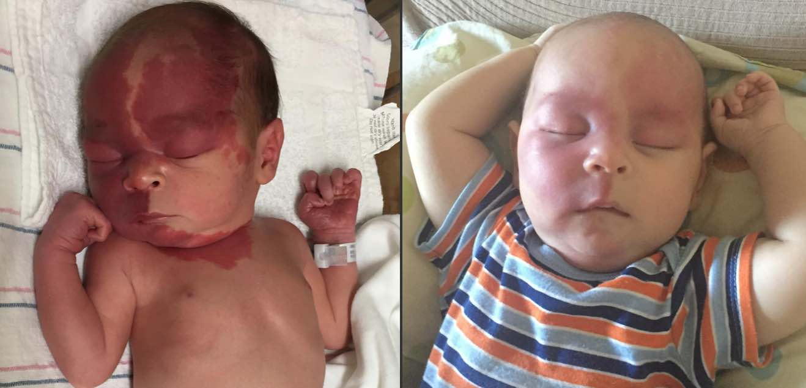

A port wine stain (PWS), so called because it reminds the stain left by red wine on fabrics, is a congenital vascular birthmark or capillary malformation, meaning that it’s present at birth and involves the blood vessels located under the skin. The skin turns more red just because of the larger blood flow passing through. The good news is that we have the technology to treat it and possibly clear it up.
But let's emphasize another aspect before digging deeper: this birthmark is not caused by anything the mother does or doesn’t do before or during her pregnancy. There are no known risk factors or ways to prevent it and there appears to be no hereditary predilection for port wine stain within families. It is estimated that three out of one thousand children are born with a port wine stain, affecting boys and girls of all racial groups equally.
When a baby is born with Sturge-Weber syndrome (SWS), the stain is also linked to the mutation of one specific gene (aka GNAQ), but in every other case the triggering cause remains incompletely understood.
Most often, this birthmark involves the face and/or the head, but the stains can appear anywhere on the body. When the PWS affects the legs, the upper extremities or the trunk, there's a possibility to present an additional condition known as Klippel-Trenaunay Syndrome (KTS).
In some instances, the vessels overgrowth can affect the nerve supply or involve brain tissues.
Newborns present pretty darker stains due to the different characteristics and higher concentration of hemoglobin. It is very important to know that, excluding the spontaneous clearance that may be observed during the first 1 to 2 years of life, a port wine stain doesn’t fade naturally (it’s extremely rare), rather it tends to get darker in time (purple or deep red).
 My son's port wine stain spontaneous clearance (1 day to 5 months old)It’s been estimated that, if not treated, 2/3 of all patients are subjected to the thickening of the birthmark by the age of 45. The thickening may imply visible skin overgrowth and/or cobbling.
It is always recommended to see a dermatologist (or pediatric dermatologist for babies and children) as soon as possible. In general, the birthmark shouldn’t itch, hurt, or bleed. If that is the case, it’s as well suggested to have it checked by a dermatologist. Also, port wine stain is more susceptible to eczema, particularly if the patient is undergoing laser treatment.
As mentioned before, today much can be done to lighten a port wine stain and prevent the complications described above. The pulsed dye laser (PDL), in conjunction with a cooling system, is now the treatment of choice for port wine stains.
According to some experts in this field, there are good chances that within the next decade port wine stains are going to be treated through gene therapy instead of laser surgery.
How do we distinguish a port wine stain from a stork bite?Stork bites are usually small vascular or red marks on the forehead (limited between the eyebrows and the lower part of the forehead) usually in a v-shaped pattern, typically present at birth and disappearing over time. When the stork bite involves the eyelids, the area of the nose, and the upper lip, it suggests that there might be something more than a stork bite, such as a port wine stain.
What about tattoos over a port wine stain?Although possible, it is not recommended as it hinders future treatments. During the course of the tattoo placement there’s likely to be more bleeding, so the tattoo artist should be warned that it may happen.